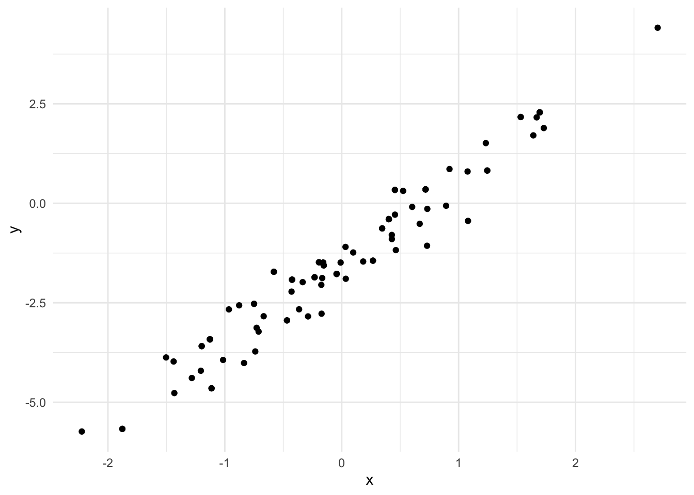

Typically, when programming with Scala I use a combination of ensime in emacs, sbt and the Scala repl. However, sometimes when working on a new project which requires a lot of data exploration and graphics it is sometimes more useful to have a notebook where figures are rendered inline with descriptions of why each figure has been generated and what it shows for future reference. Jupyter notebooks have long been the standard in Python (although I prefer rmarkdown and knitr when using R).
Jupyter notebooks can be initialised with many different kernels to serve a wide array of users. Recently there has been a release which combines the power of the Ammonite scala repl which empowers users to write small Scala scripts where dependencies can be stored in the same script file and are fetched using coursier without the need for a large SBT project. Ammonite has many more features besides this, however scripting is one of my favourites. It also allows us to write self-contained Jupyter notebooks with dependencies by utilising Ammonite as the kernel of the Jupyter notebook using Almond.
In this blog, I will show you how to use Almond to fit a linear regression using the probabilistic programming language, Rainier.
Run jupyter notebook by running jupyter notebook from a terminal and create a new document in the web interface selecting the “Scala” kernel
Scala library dependencies
Ammonite lets you import dependencies directly from Maven central using a special import syntax, for example to import the latest version of the Rainier core library simply type:
import $ivy.`com.stripe::rainier-core:0.2.2`
Then all imports from the Rainier library should be available. Additionally, we want to be able to use a plotting library Evilplot which does not have a standard resolver. Luckily Ammonite makes adding new resolvers straightforward, simply add a new block which points to the Maven repository of cibotech. Note that this is not an especially common operation - since most OSS Scala libraries are stored in the Maven central repository.
In order to perform inference to determine the posterior distribution of the unknown parameters, \(\psi = \{\alpha, \beta, \sigma\}\) on this model using Rainier first we simulate some data from the model:
import com.stripe.rainier.core._import com.stripe.rainier.sampler._val(alpha, beta, sigma)=(-1.5,2.0,0.5)val lm =for{ x <-Normal(0,1).param y <-Normal(alpha + beta * x, sigma).param}yield(x, y)implicitval s = RNG.defaultval sims = lm.sample(100)
The code above uses rainiers sampling-based monad in order to simulate standard Normal data representing the covariates, \(x_i, i = 1,\dots,100\) and the dependent variable \(y_i\). 100 \((x, y)\) pairs are simulated from the model with the selected parameter values. Now it might be of interest to plot the data using the Evilplot plotting library. Here we write out the data to a csv and use ggplot in R
Rows: 100 Columns: 2
── Column specification ────────────────────────────────────────────────────────
Delimiter: ","
dbl (2): x, y
ℹ Use `spec()` to retrieve the full column specification for this data.
ℹ Specify the column types or set `show_col_types = FALSE` to quiet this message.
lm_sims %>%ggplot(aes(x, y)) +geom_point()

The code required to sample from the posterior distribution is similar to that required to simulate the model:
First prior distributions are chosen for the static parameters, then the function Predictor is used to specify the likelihood for the linear regression as the Normal distribution. The data consists of a sequence of tuples. Finally to sample values from the posterior using Hamiltonian Monte Carlo with 5 leapfrog steps and auto-tuning of the leapfrog step-size using dual averaging.
val iters =linearModel(sims).sample(HMC(5),5000,100000,100)
Rows: 1000 Columns: 3
── Column specification ────────────────────────────────────────────────────────
Delimiter: ","
dbl (3): alpha, beta, sigma
ℹ Use `spec()` to retrieve the full column specification for this data.
ℹ Specify the column types or set `show_col_types = FALSE` to quiet this message.